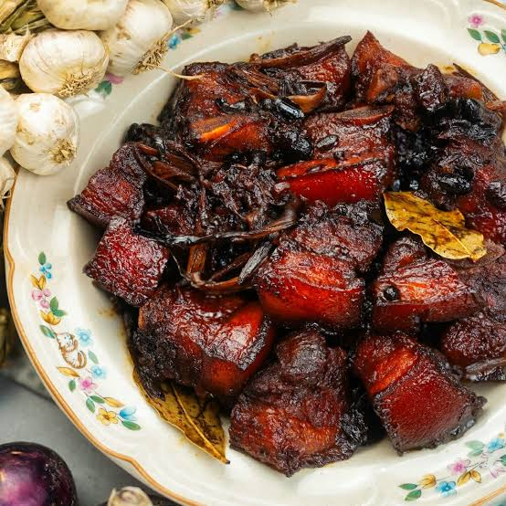

Top 10 Food Delicacies in Visayas |
F O O D L I S T |
Humba A sweet and savory Filipino pork dish. The story of Humba Bisaya is as flavorful as the dish itself. Rooted in the Visayas region of the Philippines – specifically among Cebuano-speaking communities – humba is a testament to the Filipino knack for turning simple ingredients into culinary masterpieces. It’s believed that humba has Chinese influences, with its similarities to the Chinese dish hong ba (braised pork belly). Over time, Filipino cooks adapted and localized the dish, incorporating native ingredients and techniques to create a recipe that’s unmistakably Visayan.
INGRIDIENTS: pork belly (cubed or in chunks), salted black beans (tausi), dried banana blossoms, soy sauce, vinegar, garlic, onions, brown sugar, peppercorns, bay leaves, and a sweetening liquid like clear lemon-lime soda or pineapple juice. INSTRUCTIONS: 1. Marinate the pork in vinegar, soy sauce, and pineapple juice for about 30 minutes in the refrigerator. Do not marinate the meat for an extended period, as the acidity of the vinegar and pineapple juice will break down the meat's protein fibers, altering the texture. Drain the meat from the marinade, reserving the liquid.
|